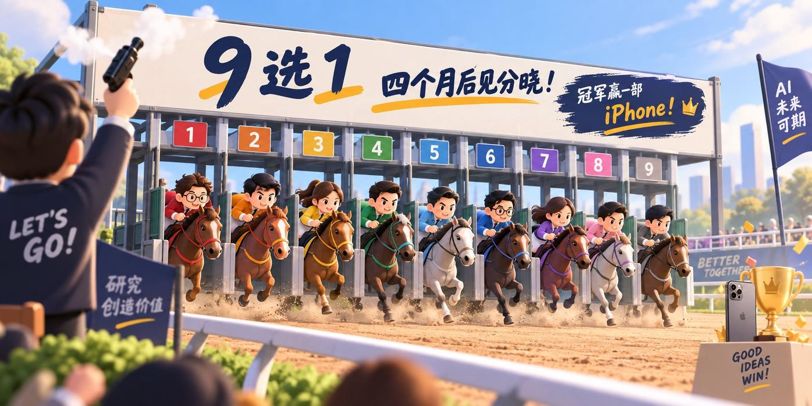
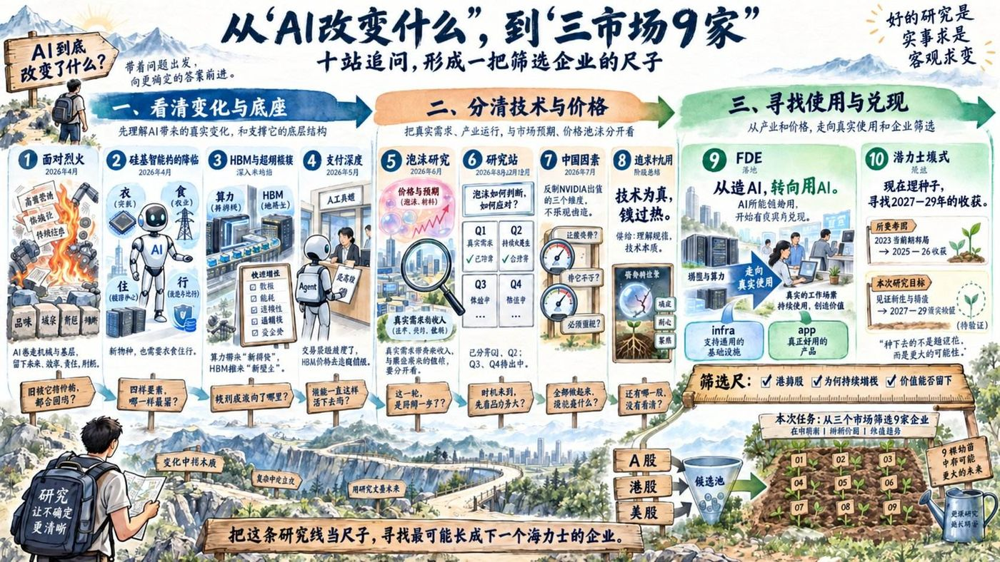
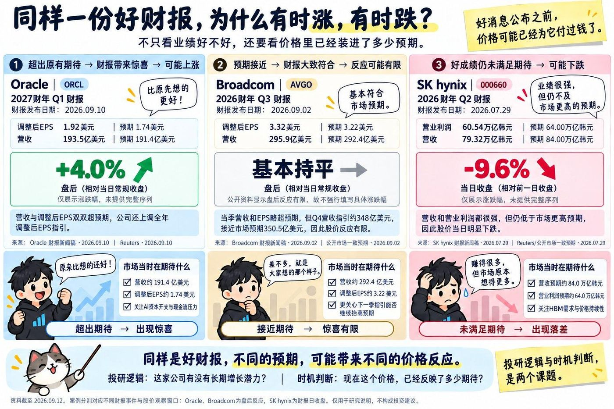

Aztec——我们一起经历过的。
看好了方向，钱没赚到。
这次重新出发之前，
想先一起看看那次经历
Aztec，我们一起经历过的项目
我仍旧相信：这个世界大概率需要
可被编程的隐私执行环境
但「大概率会发生」不等于「一定会发生」
「一定会发生」不等于「这家企业能承接」
从一个判断到一家标的
中间每一步都可能断
175 家随便挑 9 家很简单，但不想交差
这就是接下来我们一起走的路
按道理，Aztec 亏了钱，应该翻篇
不该主动展示失败

邱总设了一个游戏
让大家参与进来，也看看各自看 AI 的眼光
研究员给出 9 家候选
每人独立选一家，四个月后比涨幅
收益率最高 → 赢一部 iPhone
不交流、不记名，统一交邱总统计
允许多人选同一家；无人最高则无人获得；并列最高同时获得
但有件事值得一起想想：
游戏比的是 四个月涨幅
研究看的是 2027–2029 兑现潜力
两个问题先分开——混在一起，谁都研究不清楚
接下来是研究过程中的思路和发现
最后选哪家，是每个人自己的决定

Aztec 那一笔就是最好的例子：看好了方向，钱没赚到。错得最直接的是时机——时机重要，重要到能决定一笔判断的结果。
但这次研究不解决时机。我们要一起看的是：如果 AI 和 Agent 真被大规模用起来，哪 9 家企业最可能长成下一个海力士。这是「什么值得拥有」。
「什么是好时机」是另一个独立的判断——这家企业是不是处于一个可以买的好时机，交给每个人自己。两个问题混在一起，谁都研究不清楚，所以先拆开。
说直白一点：
想拿到 iPhone，两边都得对。左边我们可以一起研究、一起讨论；右边更大程度取决于随机性和运气——这部分谁也没法替谁做主。
接下来的分享集中在左边。大家听完之后，右边怎么判断，是每个人自己的选择。

同样一份好财报
有人涨 4%，有人跌 9.6%
区别不在数字本身
在于价格里已经装了多少期待
尺子太多，选不出来
最后我们把所有标准收敛成一个问题：
如果 AI 再强 10 倍、便宜 10 倍
这门生意是变大，还是消失？
被增强的留下，被消化的淘汰
这个标准不只适用于企业——对个人也一样
· 数据采集与清洗
· 建模与统计分析
· 量化策略与回测
· 行业跟踪与覆盖
· 深度报告撰写
· 专家网络与调研
· 尽职调查与访谈
· 财务分析与估值
· 风险评估与决策
还沉迷在某个工种的技巧里——迟早会被 AI 取代
这是事实
实事求是，客观求变：主动"蒸馏"自己
把能外包的交出去，扩展能力边界
时间和精力，留给最本质的问题：
能不能快速学习？能不能真正解决问题？
"革自己命的人最好是自己，
至少下手知道轻重"
AI 能帮你执行一切
但往哪走，只能你自己定
AI 把执行成本降到无限低——做事变便宜了
做事以外的东西变贵了
后面所有推导都站在两个前提上
不要求被证明，但需要我们先达成共识
如果不认为这两件事会发生——
后面的 9 家就没有讨论的基础
一开始面对的是成百上千条路
一步一步走过来，每一步都在选
说「不」比说「是」更多
不追共识赛道，不因为看好方向就觉得标的对
不为交差随便挑，不留被消化的中间工序
不选只有故事没有护城河的
每砍掉一条枝丫
离主干就近一步